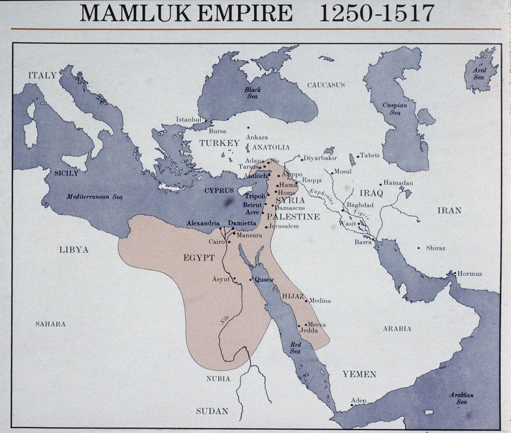

Scorched Earth
"leading to the creation of a spirit of resistance and cooperation among rulers in Syria and Egypt, whose combined efforts led to the Crusaders’ defeat" (Cleveland 34). Mamuluk Sultanate enforced Scorched Earth to make sure the Crusders could not return via ports along the shore of the Levant and the Mediterranian. [source here] Ultimatly this local Jews and Christians inland towards cities such as Jericho. [source here]
Trade Connections
......................................................
Modern Geopolitics
When taking the Crusades into a geopolitical perspective they, "can yield useful lessons for policymakers concerned with today's violent, transnational, religious movements" (Hassner 206). Terror groups such as Al-Qaeda, ISIS, or Hamas are not like insurgent groups in other areas of the world such as Korea or Vietnam, or even the American Revolutionaries. These groups are not fighting soley for politcal freedom, they are fighting for their religion. "Religion was not a force external to the Crusades that exerted a unidirectional causal effect. Instead, religion permeated every aspect of the Crusades" (Hassner 202). This helps to understand deeper into how after years and going on generations of conflict in the Middle East, is not resolved through sheer military presence. The Crusaders went to the Holy Land for Glory and God, they left their homes and marched through a desert, died, fought all for God. They did not fear failure, because their lives were in the hands of God. This is the same mindset that the modern insurgents of the Middle East fight with. When we put down a terror organization and occupy the surrounding territory, we have not won. The children of those killed, their brothers, will take up arms under God and replenish the fight tenfold.